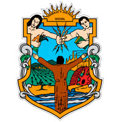

Baja California es un estado Mexicano en la Península de Baja California que limita con el estado de California de Estados Unidos. El paisaje se extiende por montañas y playas en el océano Pacífico y el golfo de California. Las ciudades cerca de la frontera con Estados Unidos incluyen Tijuana, conocida como un destino comercial y de bohemia, como también la ciudad de Rosarito, con sus amplias playas en el Pacífico. Las gastronomía en Baja California deriva de una mezcla de estilos culinarios producto a su vez de los diferentes grupos de personas que migran al estado trayendo consigo las recetas de cada una de sus culturas. Como estado norteño, las carnes son uno de los principales ingredientes en sus platillos aunque no el tradicional, como en estados de Sonora y Nuevo León. La carne de cerdo, el pollo generan complementos para los platillos típicos de la nueva cocina urbana, como hamburguesas, tortas, burros y ensaladas. Los tacos de carne asada son el platillo más popular de la cocina en Tijuana, también llamados Asaderos en Mexicali y los tacos al vapor son populares en el poblado de La Rumorosa. Hay desde puestos en las calles hasta establecimientos. Los sabores varían con estilos exportados de otros lugares del país como los tacos de adobada (variante de los Tacos al Pastor), de birria, de cabeza, chorizo, suadero, entre otros. El estado de Baja California es un estado muy activo en los deportes cuenta con clubes de Fútbol, Béisbol, Baloncesto, boliche. natación, etc. Cuenta con 3 Centros de Alto Rendimiento (CAR) en Ensenada, Tijuana y Mexicali. También cuenta con estadios en casi todas las ciudades. Las principales actividades económicas en el estado de Baja California son la industria manufacturera, la hotelería y el turismo; también son parte de estas la producción agrícola, ganadera y pesquera. Respecto al sector de comunicaciones, el estado cuenta con buenas y modernas carreteras que unen los principales destinos dentro y fuera del estado, así como ferrocarriles, puertos marinos y aeropuertos. Actualmente, el sector hortofrutícola es uno de las actividades de mayor éxito en Mexicali la capital del estado; cebolla y espárragos verdes están entre los cultivos más importantes, el algodón y el trigo siguen siendo cultivados. Hay una feria anual de la agroindustria en marzo de interés en todo México y los Estados Unidos denominada Agrobaja.
